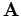

Inhalt Index DeskTop Bronstein

 Lineare Algebra Matrizen Rechenoperationen mit Matrizen Rang einer Matrix
Lineare Algebra Matrizen Rechenoperationen mit Matrizen Rang einer Matrix


In einer Matrix  ist die größte Anzahl r der linear unabhängigen Spaltenvektoren stets gleich der größten Anzahl der linear unabhängigen Zeilenvektoren. Diese Zahl r heißt Rang der Matrix, auch mit bezeichnet.